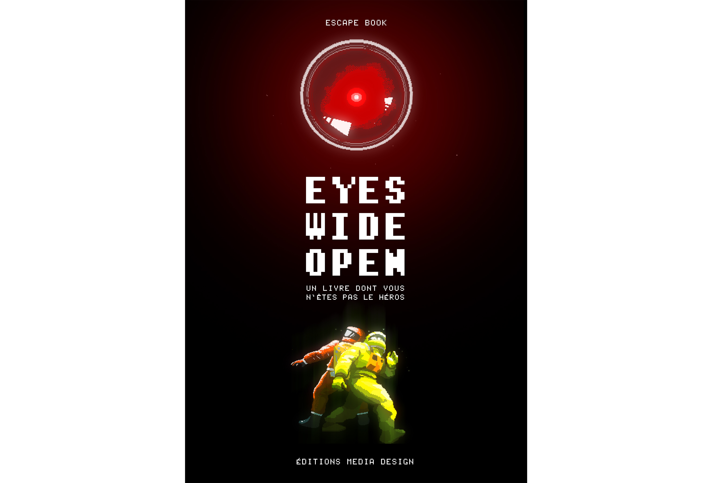
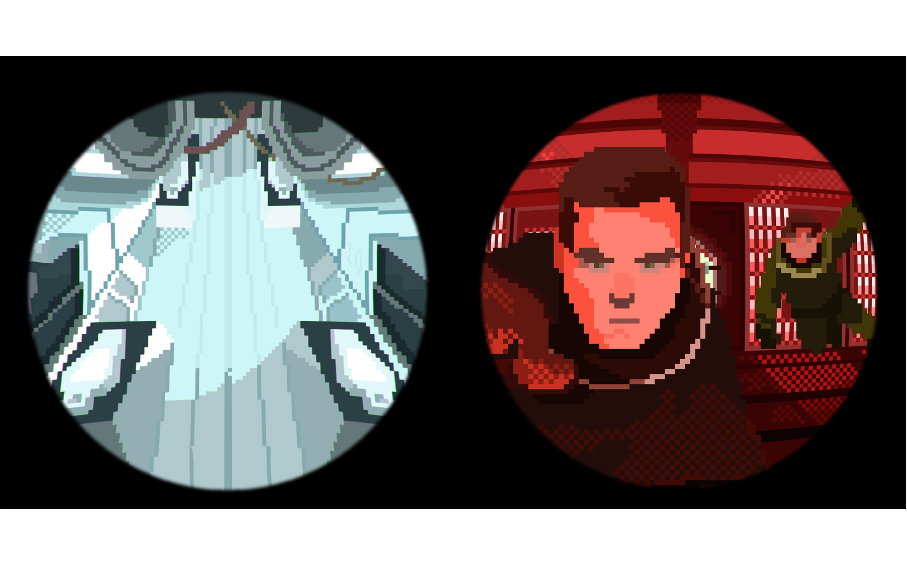

Workshop “Aux frontières du réel”
ESAD Orléans 2023
En collaboration avec : Orphéo GAGLIARDINI, Denis GAILLARD,
Scott MAUGER, Carla MAZZUCA
Quatrième de couverture :
Tu es Dave Bowman le commandant de
bord de la mission spatiale en direction
de Jupiter, accompagné de ton équipier
Frank. Le voyage prend une tournure
inattendue, quand HAL, L’intelligence
artificielle du vaisseau trahit votre équipage
après avoir exprimé ton intention de le
désactiver, en raison de ses actions suspecte.
Tu te retrouves alors piégé dans la salle
d’hibernation avec Frank, mais devez vous
échapper et finir ce que vous avez entrepris
pour le bien de la missio. Le temps presse,
chaque seconde qui s’écoule vous rapproche
de la confrontation avec celui qui vous a
trahis.
Concentré et déterminé, tu devras fouiller
la salle à la recherche d’indices cruciaux et
surtout prendre des décisions qui façonnent
le cours de votre odyssée... et de votre survie !
